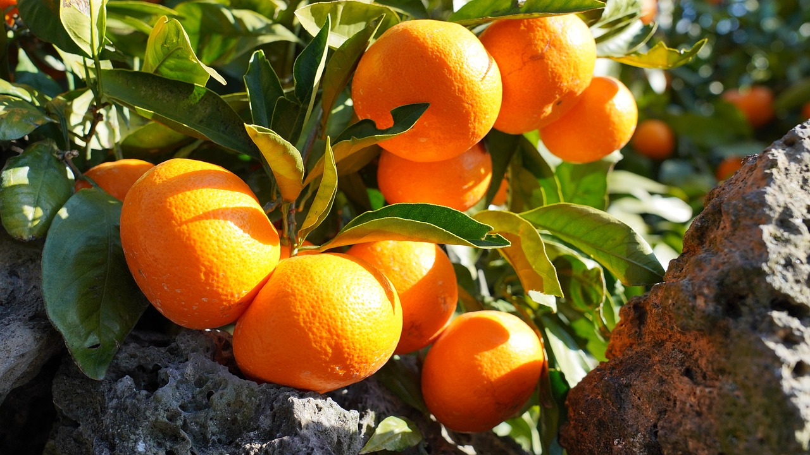
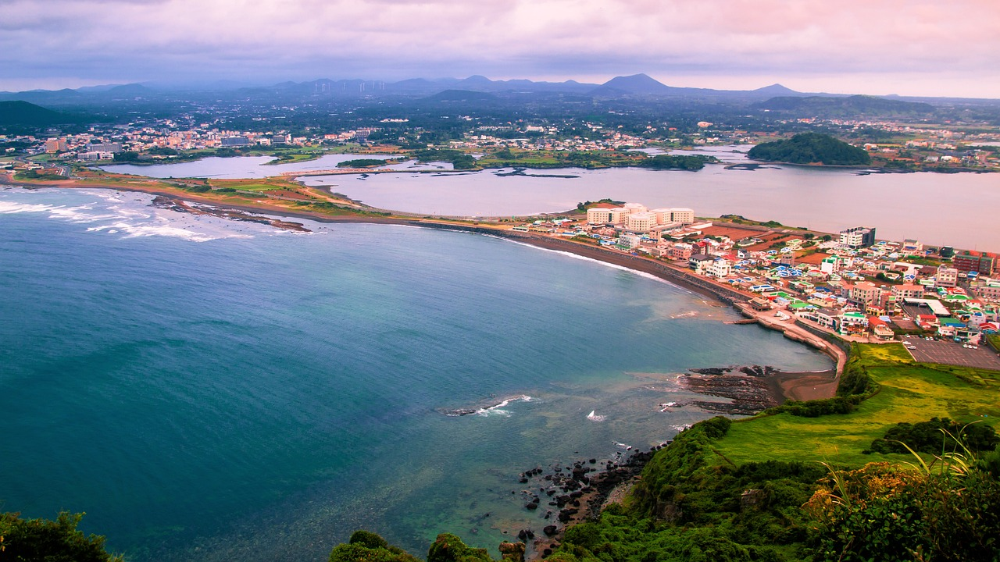
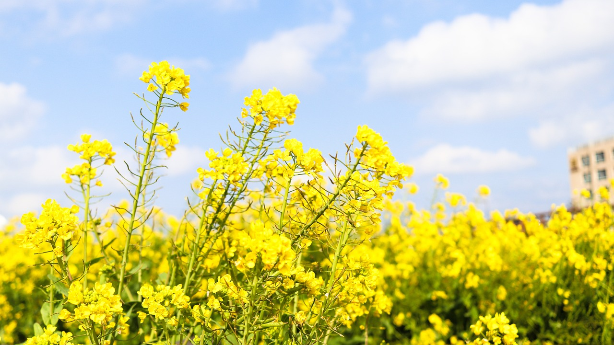
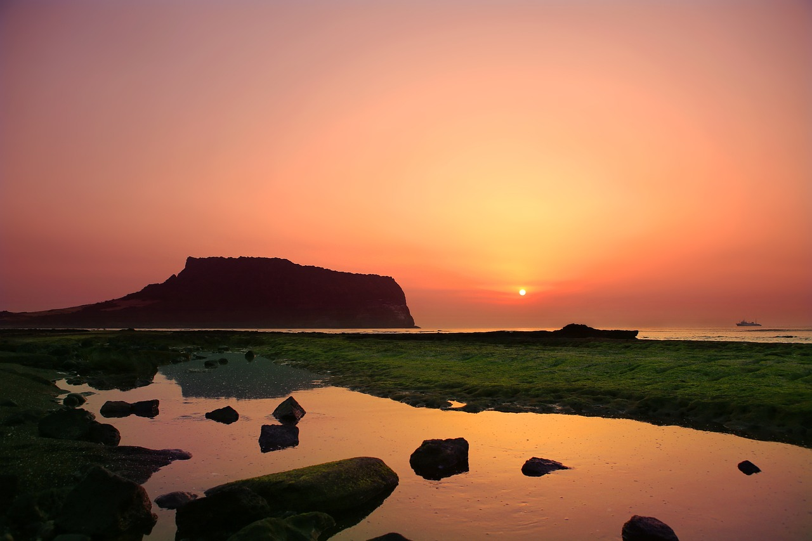
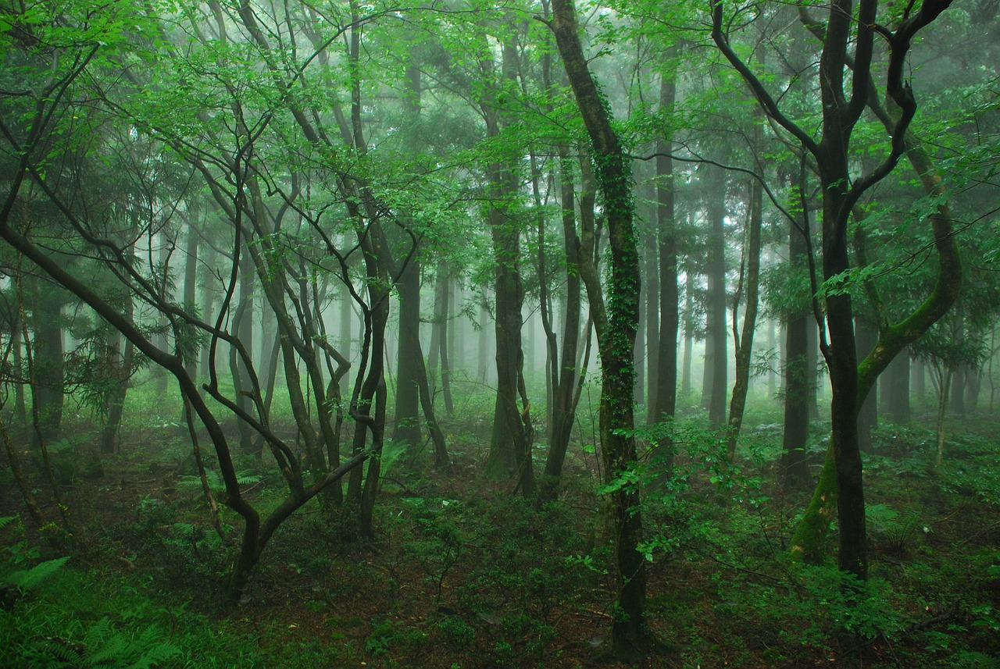
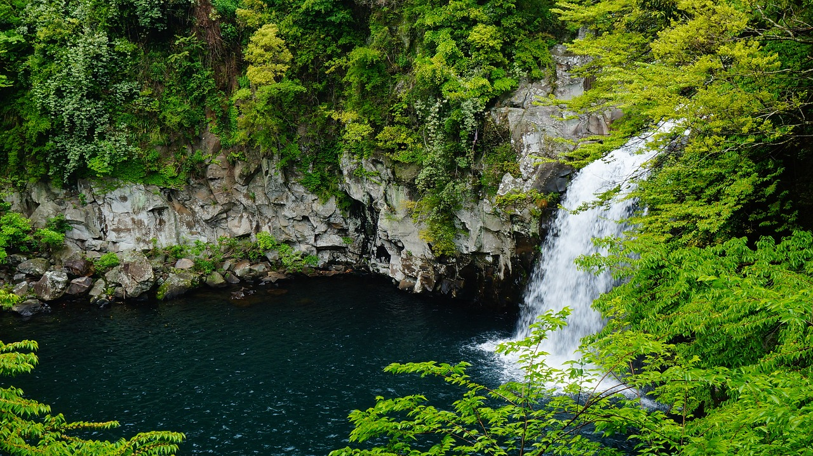
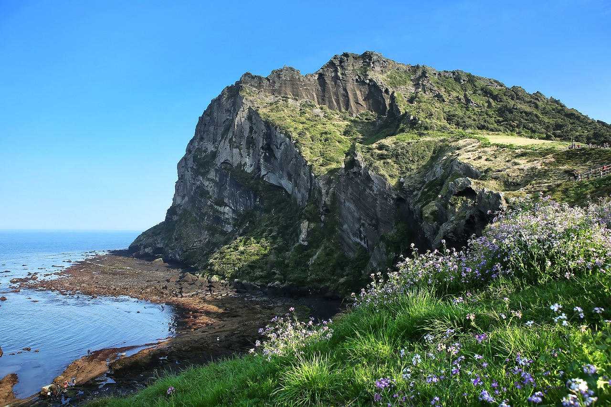

beautiful jeju
섬 전체가 하나의 거대한 관광자원인 제주도. 에메랄드빛 물빛이 인상적인 협재 해수욕장은 제주 대표 여행지며, 파도가 넘보는 주상절리와 바다 위 산책로인 용머리 해안은 제주에서만 볼 수 있는 천혜의 자연경관으로 손꼽힌다.
journey

사려니숲 길
‘사려니’는 ‘신성한 숲’ 혹은 ‘실 따위를 흩어지지 않게 동그랗게 포개어 감다’라는 뜻으로, 사려니오름까지 이어지는 숲길이기 때문에 사려니숲길이라고 불린다

천제연 폭포
제주 서귀포시 중문동에 있는 폭포로 천제교 아래쪽에 상·중·하의 3단 폭포로 이어져 있다. 천제연 제1폭포는 길이 22m, 수십m의 소를 이루며, 이 물이 흘러내려 다시 제2·제3의 폭포를 만든다.

성산 일출봉
제주특별자치도 서귀포시 성산읍 성산리에 있는 산으로 성산 일출봉에서의 일출은 대한민국에서 가장 아름다운 해돋이로 꼽히며 영주십경 중 하나이다.